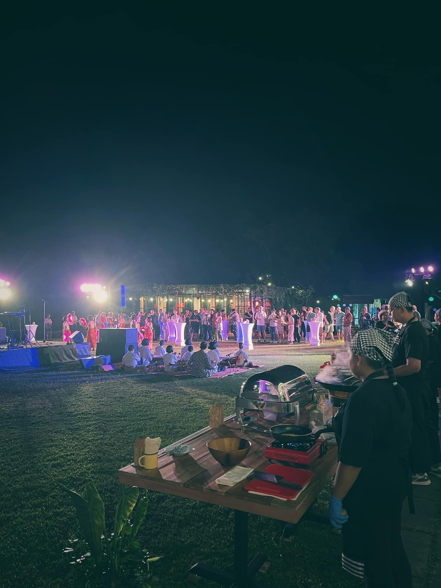
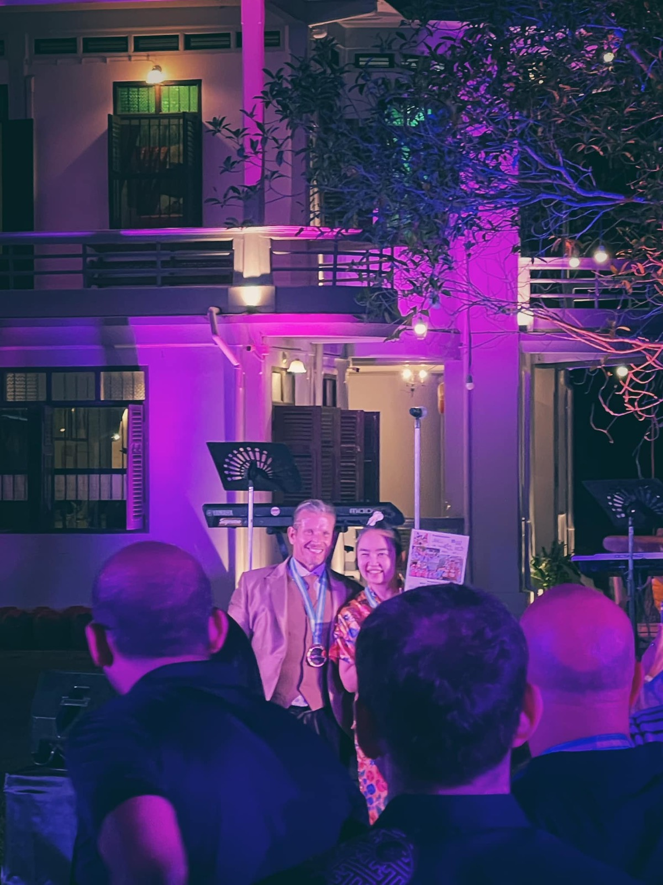
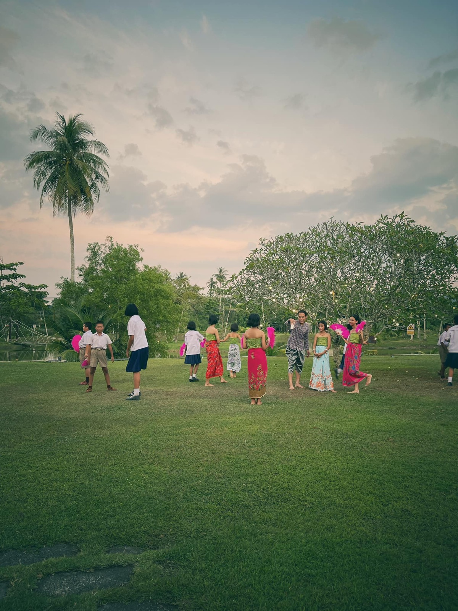
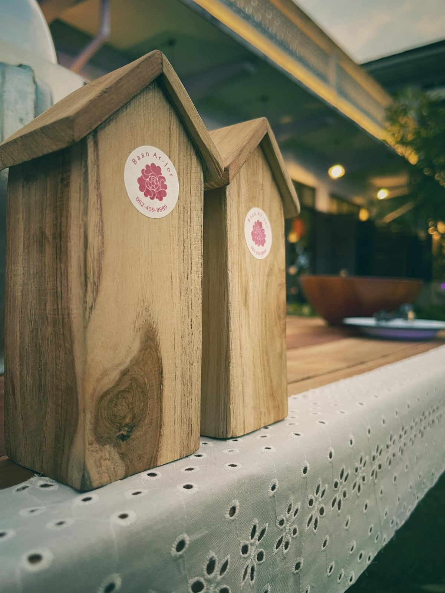
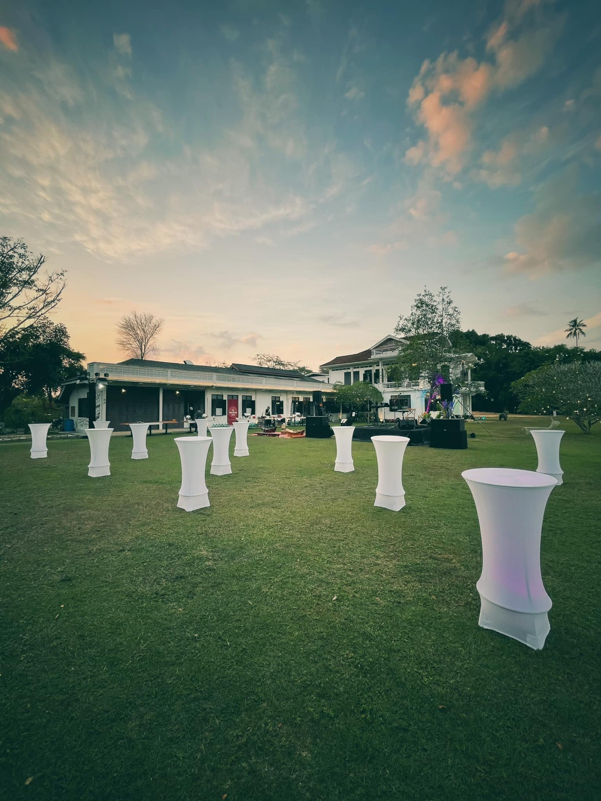
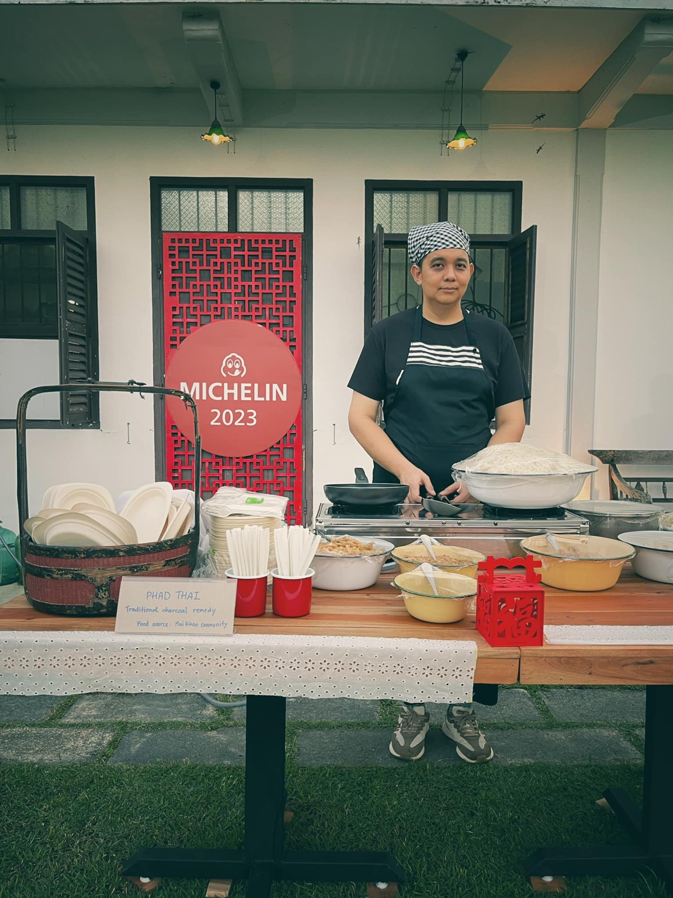

2567 · กิจการ · บันทึกย่อย
บ้านอาจ้อจัดเลี้ยงผู้บริหารระดับสูงจาก 36 ประเทศ พร้อมการแสดงนักเรียน






Die with memories not dream 😇❤️
อีกงานที่ตื่นเต้นสุด ว่าจะทำออกมาได้ดีมั้ย ในที่สุดทีมเราทำได้ 🥰
ขอบคุณคุณลูกค้าที่เลือกบ้านอาจ้อเป็นสถานที่จัดเลี้ยง exclusive party ทีมผู้บริหารระดับสูงจากกว่า 36 ประเทศ 🎉✨
ขอบคุณคณะอาจารย์ และน้องนักเรียน รร หงษ์หยกบำรุง รร บ้านไม้ขาว ที่มาแสดงความสามารถให้ชาวต่างชาติได้ชมกัน ✨
ขอบคุณทีมงานบ้านอาจ้อทุกคน รวมถึงทีมลูกค้า ทั้งเตรียม ทั้งประชุม ประสานงาน จนการจัดงานผ่านไปด้วยดี ❤️
ขอบคุณทีมเทวดาสัมพันธ์ อากาศดี ไม่มีเหตุการณ์ตื่นเต้นให้ต้องรับมือจัดการ 😇
#โต๊ะแดง1936 🧧
#บ้านอาจ้อ 💕